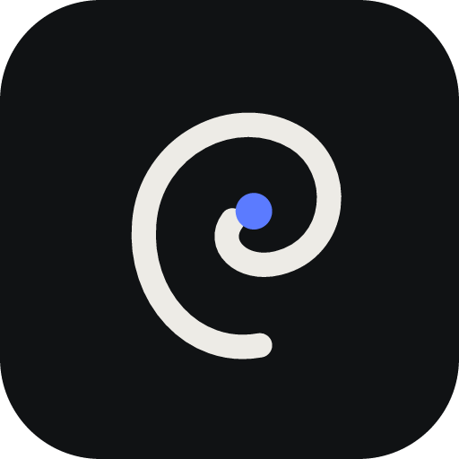
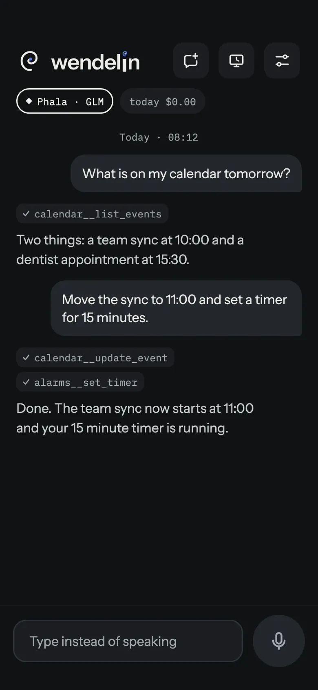
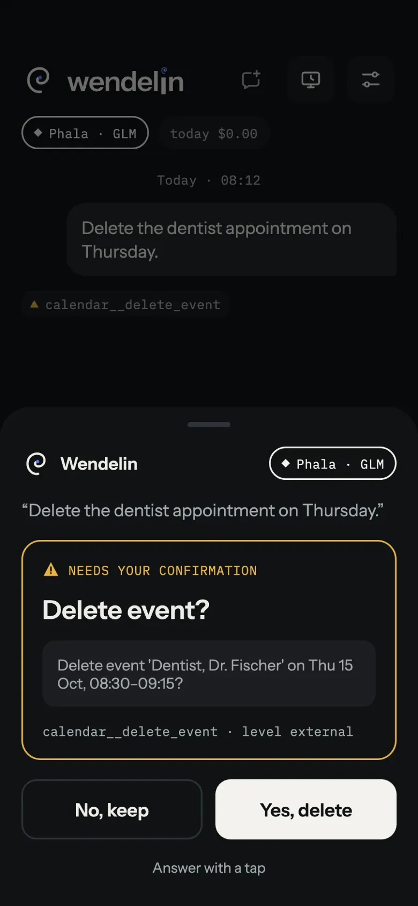
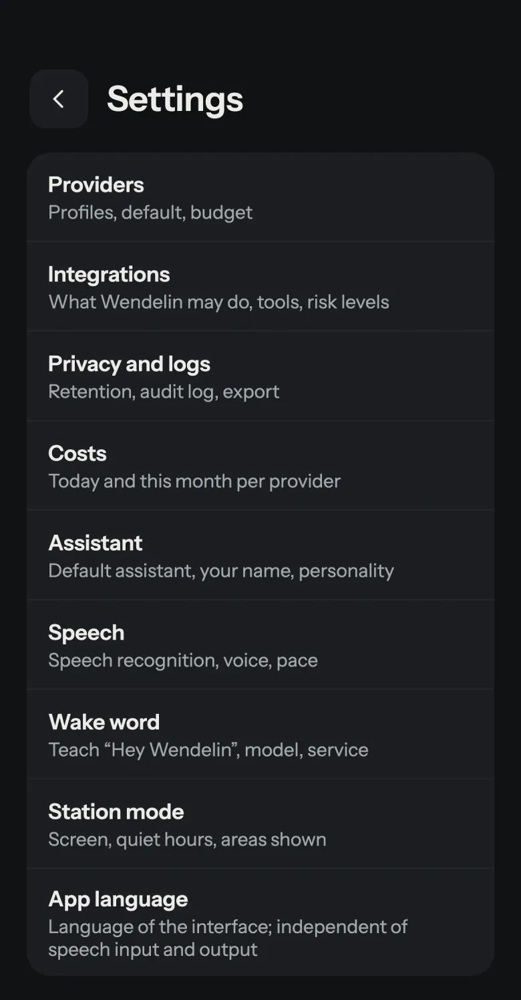

Wendelin
Deine Stimme bleibt auf dem Handy. Das Sprachmodell wählst du.
Wendelin ist ein persönlicher Sprachassistent für Android. Weckwort, Spracherkennung und Sprachausgabe laufen lokal, und nur Text geht an ein Sprachmodell deiner Wahl, mit deinem eigenen API-Schlüssel.
Warum Wendelin?
Die meisten Sprachassistenten schicken deine Stimme in die Cloud eines anderen und sprechen nur mit den Diensten, die der Hersteller ausgesucht hat. Wendelin dreht das um: Es wird der Standard-Assistent deines Handys, versteht dich auf dem Gerät, und nur Text geht an ein Sprachmodell deiner Wahl (mit deinem eigenen API-Schlüssel, ohne Wendelin-Server). Bei Anbietern mit vertraulicher Ausführung (TEE) prüft Wendelin die Attestierung selbst, bevor es etwas schickt. Es läuft ohne Google Play Services und damit auch auf AOSP-basierten Systemen.
Was Wendelin kann
Alles ist freiwillig: Jede Integration bleibt aus, bis du sie einschaltest.
Sprechen statt tippen
Wendelin wird als Standard-Assistent eingerichtet und startet per Seitentaste, Assistenten-Geste oder mit „Hey Wendelin“. Im Gesprächsmodus hört es nach der Antwort weiter zu, und du kannst es mit dem Weckwort unterbrechen.
Sprache bleibt auf dem Gerät
Weckwort, Spracherkennung (Whisper, Parakeet) und Sprachausgabe laufen lokal. Audio verlässt das Handy nicht.
Sprachmodell nach Wahl
Claude, OpenAI, Mistral, OpenRouter, Ollama oder ein eigener Endpunkt, mit deinem eigenen API-Schlüssel. Kein Wendelin-Server dazwischen.
Geprüfte vertrauliche Anbieter
Bei Anbietern mit vertraulicher Ausführung (Phala, NEAR AI, Tinfoil) prüft Wendelin die Attestierung, auf Wunsch auch den GPU-Nachweis, bevor es Daten schickt.
Integrationen für den Alltag
Home Assistant, Spotify, Mediensteuerung, Kontakte, Anrufe und SMS, Navigation, Kalender, Wecker und Timer, Aufgaben (Todoist, Google Tasks), Wetter, Einkaufslisten (Bring!), Obsidian-Notizen sowie eigene MCP- und HTTP-Werkzeuge.
Sicherheit in Stufen
Jedes Werkzeug bekommt eine Stufe von A bis D. Sie legt fest, was bei gesperrtem Handy erlaubt ist. Riskante Aktionen fragen immer nach, Änderungen lassen sich kurz rückgängig machen.
Gesperrt nützlich
Bei gesperrtem Handy zeigt das Fenster die Anfrage und die Antwort, aber keinen Verlauf. Kontakte gibt Wendelin nur feldweise heraus, beim Navigieren zu einem Kontakt bleibt die Adresse auf dem Gerät.
Prüfprotokoll auf dem Gerät
Jede Anfrage, jeder Werkzeugaufruf und jedes Attestierungsergebnis steht lokal im Protokoll und lässt sich exportieren oder löschen.
So sieht es aus
Bildschirme der aktuellen Version (englische Oberfläche, erfundene Beispielinhalte). Antippen für die große Ansicht.






Installation
Voraussetzung: Android 10 oder neuer. Google Play Services werden nicht gebraucht.
wendelin-<version>.apkundSHA256SUMSaus der neuesten Version laden und die APK installieren (Installation aus dieser Quelle erlauben, wenn Android danach fragt).- Prüfen (empfohlen): Vergleiche die Prüfsumme mit
SHA256SUMSund das Signaturzertifikat mit dem Fingerabdruck aus den Versionshinweisen und der README. - Android 13 und neuer: Bei einer APK von außerhalb eines Stores sperrt Android zuerst den Zugriff auf SMS und Benachrichtigungen. Wähle in den App-Infos (Menü mit drei Punkten) Eingeschränkte Einstellungen zulassen; Wendelin zeigt diese Schritte, wenn sie nötig sind.
Erste Schritte
- Wendelin öffnen und dem Onboarding folgen. Mikrofonberechtigung erteilen; die Sprachmodelle werden in der App geladen.
- Einen Anbieter einrichten (Einstellungen > Anbieter): Vorlage wählen, API-Schlüssel eintragen, Verbindungstest ausführen.
- Wendelin zum Standard-Assistenten machen und „Hey Wendelin“ einschalten, wenn du freihändig sprechen willst.
- Die gewünschten Integrationen einschalten und die Berechtigungen erteilen, nach denen sie fragen. Dann sag zum Beispiel: „Hey Wendelin, stell einen Timer auf zehn Minuten.“
FAQ
Ist Wendelin kostenlos?
Ja. Es ist quelloffen unter der GPL-3.0-or-later, ohne Werbung, ohne Abo und ohne Konto. Ein Sprachmodell-Anbieter, den du wählst, kann für seine eigene API Gebühren verlangen.
Verlässt meine Stimme das Handy?
Nein. Weckwort, Spracherkennung und Sprachausgabe laufen mit den lokalen Engines auf dem Gerät. Nur das Transkript, der System-Prompt, ausgewählte Gedächtnis-Einträge sowie Werkzeugbeschreibungen und -ergebnisse gehen an den Sprachmodell-Anbieter, den du gewählt hast.
Verbindet sich Wendelin mit dem Internet?
Nur für das, was du einrichtest: deinen Sprachmodell-Anbieter, die Integrationen, die du einschaltest, die Prüfstellen vertraulicher Anbieter und den einmaligen Download der Sprachmodelle. Es gibt keine Analyse, keine Telemetrie und keinen Wendelin-Server. Jede Verbindung steht in der Datenschutzerklärung.
Welche Systeme werden unterstützt?
Android 10 oder neuer. Google Play Services werden nicht gebraucht, daher laufen auch AOSP-basierte Systeme. iOS wird nicht unterstützt.
Welche Sprachen gibt es?
Die Oberfläche gibt es auf Deutsch, Englisch und Französisch.
Wie kann ich helfen?
Fehler melden, Ideen vorschlagen oder übersetzen: siehe CONTRIBUTING.md (Englisch).